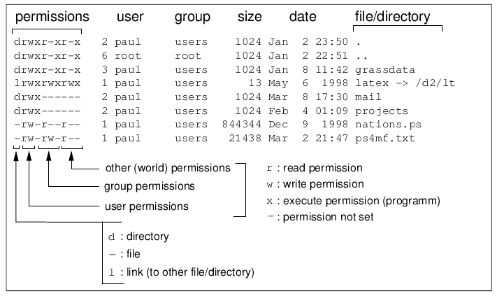

Usefull links:
- Advanced bash scripting and the whole playlist
Lecture 2
- TLPI Ch. 14-15
- inodes in ext4
- netcat
- dd
- ln
- chmod
-
inode (index node, индексный дескриптор) - не зависящая от файловой ситсемы сущность
- hard link - это ассоциация пути в файловой системе c inode. По сути
Map<Path, INode> - хардлинки запрещено делать между ФС (нельзя сделать из /home в /var/log)
- разные маунты ФС имеют разную нумерацию inode-ов
Посмотрим на пример вывода команды stat:
$ stat README.md
File: README.md
Size: 22 Blocks: 8 IO Block: 4096 regular file
Device: 259,2 Inode: 3161481 Links: 1 Access: (0644/-rw-r--r--) Uid: ( 1000/ ahmad) Gid: ( 1000/ ahmad)
Access: 2025-09-24 23:12:03.450097612 +0300
Modify: 2025-09-21 18:50:09.736830287 +0300 Change: 2025-09-21 18:50:09.736830287 +0300
Birth: 2025-09-21 18:50:09.736830287 +0300
Links - количество жестких ссылок на и-ноду.
Можно попытаться с помощью команды find ... -inum N найти все файлы,
ссылающиеся на и-ноду N:
$ find . -inum 3161481
./README.md
$ ln README.md readme2
$ find . -inum 3161481
./readme2
./README.md
Кстати, хардлинки разрешены для директорий, но только под рутом, чтобы случайно не создать цикл из ссылок:
(из man ln)
-d, -F, --directory
allow the superuser to attempt to hard link directories (note:
will probably fail due to system restrictions, even for the
superuser)
- soft link (символическая ссылка) -
Map<Path, Path>
Преимущество симфолической ссылки в том, что они могут существовать cross-FS, т.к. пути FS-agnostic
/dev/
Кастомная ФС под девайсы: запись в файл = запись в девайс, чтение файла = чтение из девайса.
- /dev/null - устройство в которое можно бесконечно писать че угодно без
какого-либо эффекта. Пример
./command 2>/dev/null /dev/random//dev/urandom- можно читать случайный поток байт/dev/zero- можно читать и получать бесконечный поток нулевых байтов/dev/ttyN- виртуальные консоли, туда можно писать/dev/console- не понял, SO/dev/sd[a-z][0-9]*- это файлы-дырки, которые являются интерфейсом к SATA-based дискам. Номер в конце - номер раздела (партиции) диска./dev/nvme*- то же самое для NVME-дисков (подключенные через PCIe а не SATA)- файловые дырки бывают символьные (c) а бывают блочные (b)
Как разлить по сети образ диска на другой компьютер в локальной сети:
# transmitter (has address 192.168.0.1)
dd if=/dev/sda | nc -P1234
# receiver
nc 192.168.0.1:1234 | dd of=/dev/sda
А что если не хотим разбираться с SIGPIPE и писать signal handler-ы? Тогда можно заиспользовать именованные каналы - на помощь приходит mkfifo:
mkfifo ./tx
nc -P1234 <./tx &
dd if=/dev/sda >./tx
# receiver
mkfifo ./rx
nc 192.168.0.1:1234 >./rx &
dd of=/dev/sda <./rx
Если бы мы просто сделали touch ./rx, то всё взаимодействие происходило через диск и мы бы получили оверхерд на запись/чтение с него. Зато именованный канал работает in-memory.
Разберем вывод ls -l:

Note: 2 (второе поле) - кол-во жестких ссылок на эту inode
chmod - позволяет менять пермишены (первое поле):

chown - позволяет менять владельцев и создателей